Maneje el computador solo con la cabeza y la cara: mueva el puntero, haga clic sin manos y escriba o hable con un teclado grande en pantalla.
Versión 1.0.0 · Windows 64 bits
01
Qué es y para quién
Lycan Face Control mira la cara con la cámara del computador y convierte los movimientos de la cabeza en el movimiento del puntero. Un gesto sencillo, como abrir la boca o levantar las cejas, hace clic. Y un teclado grande en pantalla permite escribir y decir en voz alta lo que la persona quiere decir.
Está pensado para personas con ELA (esclerosis lateral amiotrófica) y otras condiciones que limitan el movimiento de las manos, y para quienes las acompañan y las cuidan.
Comunicarse
Frases listas como «Tengo sed», «Tengo dolor» o «Gracias», y un teclado para decir todo lo demás.
Usar el computador
Navegar, ver videos, leer, escribir mensajes. Lo mismo que con un ratón, con la cabeza.
Solo con parpadeos
Si la persona ya no mueve la cabeza, el teclado avanza solo y un parpadeo largo elige.
Por qué existeEste programa nació de una historia de familia: alguien muy querido vivió la ELA, y su familia tuvo que pagar un programa muy costoso para que pudiera comunicarse. Nadie debería tener que pagar una fortuna para poder decir «tengo sed» o «gracias». Lycan Face Control es de código abierto y sin costo de licencia.
Todo en su computadorNo necesita internet. La imagen de la cámara se usa en el momento y nunca se guarda ni se envía. La voz es la de Windows y también funciona sin conexión.
02
Video tutorial
Un recorrido corto por la calibración, los gestos y el teclado.
Ábralo con doble clic. No pide permisos de administrador.
Si quiere, marque crear un ícono en el escritorio y abrir Lycan Face Control al encender el computador. Esto último es útil si la persona va a usarlo todos los días: así no depende de que alguien lo abra.
Al terminar, abra Lycan Face Control desde el menú Inicio o el escritorio.
Si Windows lo detienePuede salir un aviso azul que dice «Windows protegió su PC» (SmartScreen). Sale porque el programa es nuevo y no tiene firma digital, que tiene un costo anual.
Haga clic en «Más información» y luego en «Ejecutar de todas formas».
Si más adelante lo desinstala, el programa le pregunta si quiere borrar también la configuración (calibración, gestos, frases rápidas, palabras aprendidas y atajos). Si dice que no, la conserva para la próxima vez. El código está en github.com/INGEMAQSEWING/lycan-face-control.
04
La primera vez y la calibración
La primera vez se abre una bienvenida de cuatro pantallas: qué hace el programa, cómo acomodar la cámara, cómo se hace clic y, al final, la calibración guiada.
Antes de empezar, acomode la cámara:
A la altura de los ojos, a unos 50 a 70 cm de la cara.
Con la luz de frente o de lado. Evite una ventana detrás de la persona.
Si usa gafas con reflejos, incline un poco la pantalla.
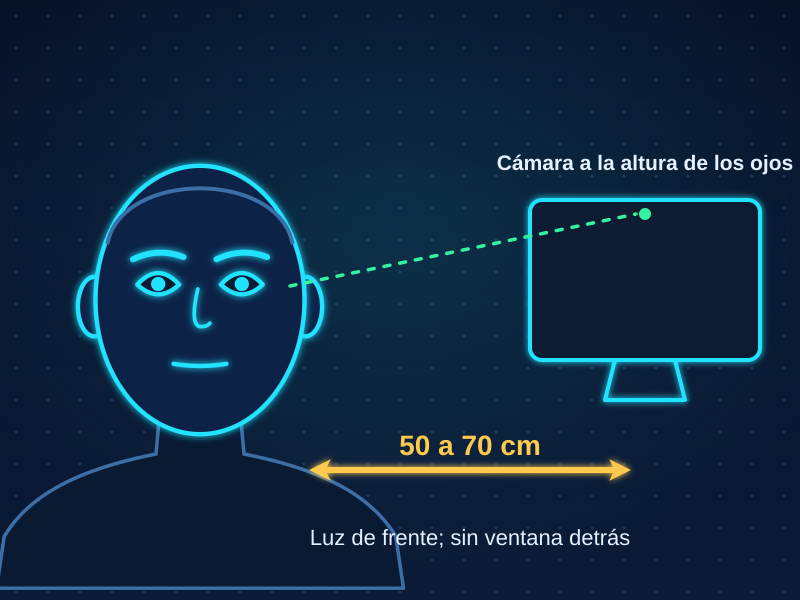
La cámara a la altura de los ojos, a 50 a 70 cm.
La calibración (unos dos minutos)
Cada paso avanza solo cuando termina: la persona solo sigue las instrucciones de la pantalla. El cuidador puede elegir «Repetir este paso» o «Atrás» con el ratón. Nada se graba: el programa solo guarda unos números.
Posición. La cara en el centro de la cámara, a un brazo de distancia. El programa dice si hay que acercarse o alejarse.
Centro. Mire al frente, a la mitad de la pantalla, y quédese quieto.
Izquierda, derecha, arriba y abajo. Gire la cabeza hasta donde le quede cómodo, sin forzar. Con ese rango cómodo el puntero llega a toda la pantalla.
Cara en reposo. Mire al frente con la cara relajada y la boca cerrada.
Parpadeo natural. Parpadee como siempre, sin pensarlo. Así el programa aprende a no confundir esos parpadeos con un clic.
Parpadeo largo (solo si usa el barrido o «Solo comunicación»). Cierre los ojos hasta que la barra se ponga verde y ábralos, tres veces. En «Solo comunicación» no se piden los giros de la cabeza.
Probar los gestos: abrir la boca, levantar las cejas y, si está encendida, sonreír, tres veces cada uno. Se puede omitir el que no use. Si un gesto casi no se nota, se deja con el ajuste de fábrica y la pantalla final lo dice.
Prueba final. Lleve el puntero a cuatro círculos y quédese quieto sobre cada uno. Con el barrido, la prueba es el parpadeo largo y la ventana se cierra sola.
RepetirlaCalibre otra vez desde el botón Calibrar de la ventana principal cuando cambie la posición de la cama o la silla, cuando mueva la cámara o si la persona está más cansada que de costumbre.
05
Mover el puntero
Gire la cabeza a los lados y arriba o abajo: el puntero la sigue. El programa quita el temblor y no hace falta forzar el cuello. Si la persona voltea la cabeza mucho más allá de lo cómodo (para mirar a alguien, ver televisión o comer), el puntero se queda quieto y no hace clics hasta que vuelva a mirar la pantalla.
Recentrar: si la persona cambió de posición, mire al frente y elija Recentrar en la ventana principal (o el cuidador presiona Ctrl+Alt+C). El centro queda donde está mirando ahora.
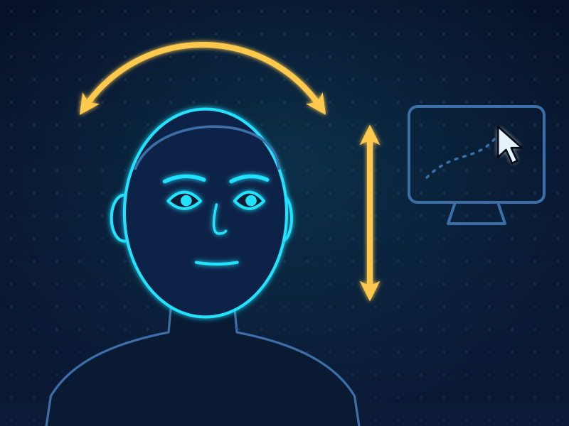
El puntero sigue los giros de la cabeza.
Tres formas de mover el puntero
Se eligen en Opciones ▸ Puntero ▸ Forma de mover el puntero.
Directo
Viene así de fábrica. Cada posición de la cabeza es un punto de la pantalla.
Como una almohadilla
El puntero avanza lo que se mueva la cabeza, como el panel táctil de un portátil.
Palanca
Para quien mueve poco el cuello: el puntero sigue avanzando mientras la cabeza esté girada.
En la misma pestaña están la velocidad del puntero (de 1 a 10: con 10 basta un movimiento pequeño) y la suavidad, que quita el temblor.
06
Clic quedándose quieto
Es la forma más sencilla de hacer clic: lleve el puntero sobre algo y quédese quieto un momento. Junto al puntero aparece un anillo verde que se va llenando. Cuando se completa (en 1 segundo, de fábrica), se hace el clic y suena un toque suave.
Para no hacer clics sin querer, el anillo solo empieza después de mover el puntero a otro lugar: quedarse quieto mucho rato en el mismo punto no hace clic tras clic.
En Opciones ▸ Clic se ajusta el tiempo quieto para hacer clic, cuánto se puede mover sin cancelar, la espera entre un clic y otro y el sonido. También se puede apagar este clic y usar solo gestos.
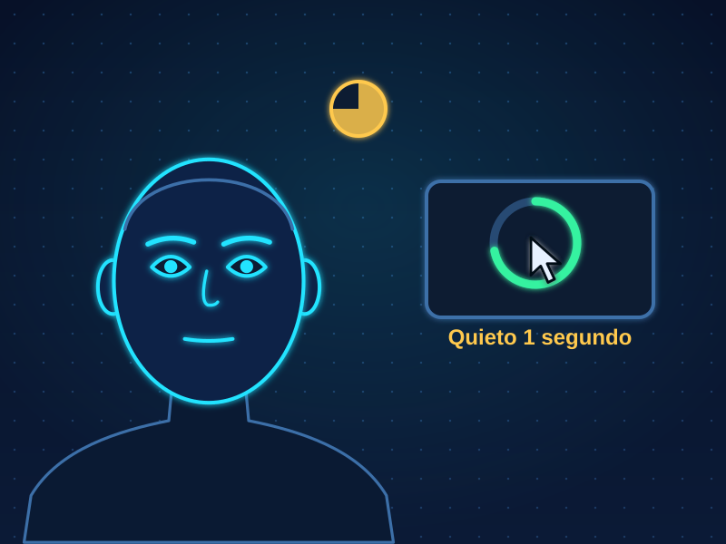
El anillo se llena y hace clic.
07
Gestos de la cara
Los gestos son otra forma de hacer clic, más rápida que quedarse quieto. Así vienen de fábrica; cada uno se puede encender, apagar o cambiar en Opciones ▸ Gestos, y la ventana de Ayuda siempre muestra cómo están puestos.
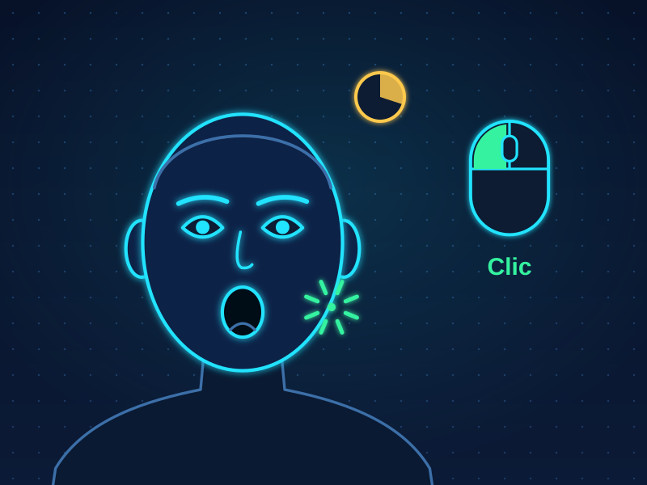
Clic
Abrir la boca
Abra la boca un momento (algo más de medio segundo) y ciérrela. El clic cae donde está el puntero. Una boca abierta con una sacudida de la cabeza (tos, estornudo) o con los ojos achinados (risa, bostezo) no cuenta.
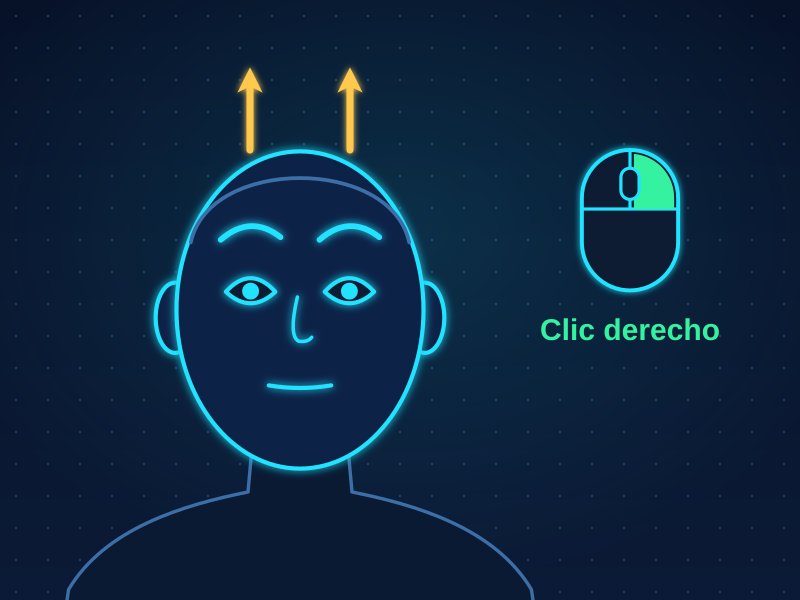
Clic derecho
Levantar las cejas
Levante las cejas un momento y bájelas. Sirve para abrir el menú de opciones de algo, como el clic derecho del ratón.
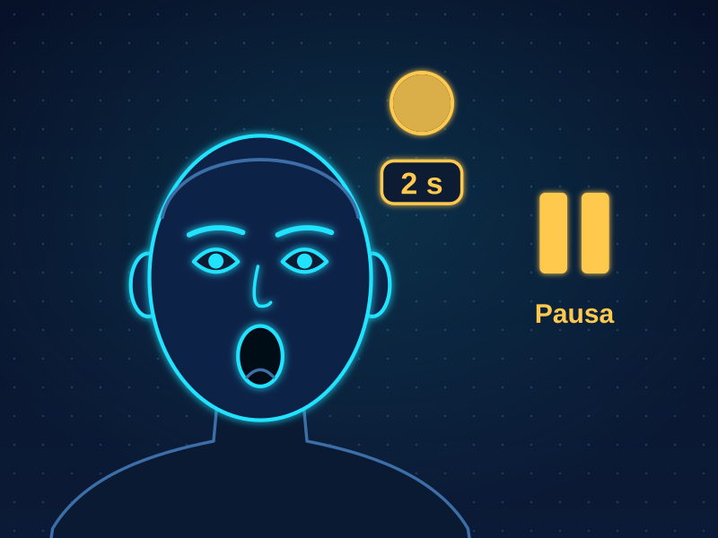
Pausar
Boca abierta 2 segundos
Mantenga la boca abierta dos segundos y ciérrela. El programa deja de mover el puntero y de hacer clics. Sirve para descansar, comer o conversar sin preocuparse.
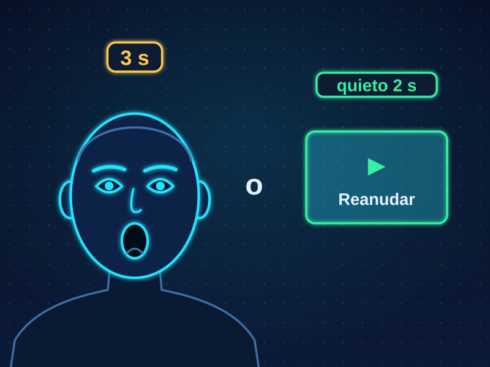
Reanudar
Boca abierta 3 segundos, o el botón Reanudar
Abra la boca unos tres segundos y ciérrela, o quédese quieto dos segundos sobre el botón grande «Reanudar». Un bostezo muy largo, o con los ojos cerrados, no cuenta.
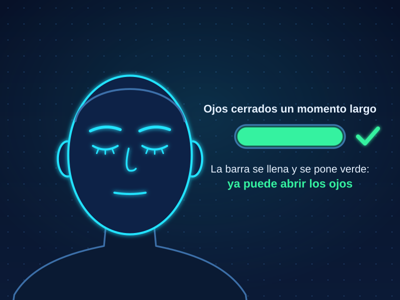
Elegir en el barrido
Parpadeo largo
Cierre los ojos un momento largo (de fábrica, 0,8 segundos; la calibración lo ajusta a cada persona). Mientras están cerrados, una barra se llena y se pone verde: ya puede abrirlos. Se usa en el barrido; fuera de él no hace nada, salvo que el cuidador le asigne «Clic» en Opciones.
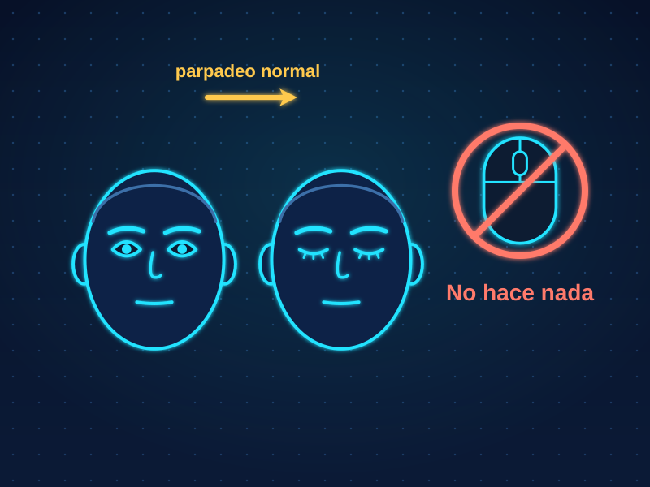
Nunca hace nada
Parpadeo natural
Los parpadeos de siempre, los que se hacen sin pensar, nunca hacen clic, sin importar lo que se configure. El programa los aprende en la calibración para no confundirlos.
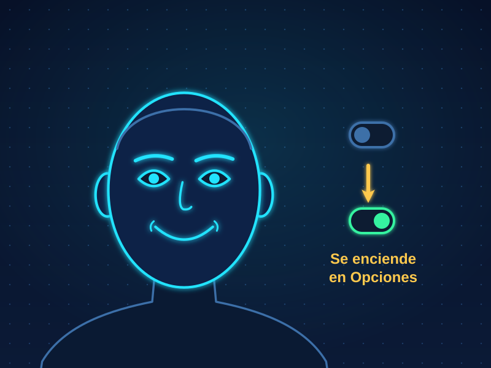
Opcional · viene apagada
Sonreír
Sonría con la boca cerrada. Viene apagada porque una sonrisa espontánea, en medio de una conversación, haría clics sin querer. Si le sirve, enciéndala en Opciones ▸ Gestos ▸ Sonrisa y elija qué hace.
Qué se puede asignar a cada gesto
Cada gesto tiene dos acciones: «Al hacerlo» (un momento) y «Al sostenerlo 2 segundos». Se puede elegir entre: nada, clic (el que esté elegido en la barra), clic izquierdo, clic derecho, doble clic, arrastrar, pausar o reanudar, abrir el teclado, recentrar, y en el teclado borrar, hablar, elegir o avanzar el barrido. También se ajustan la sensibilidad y el tiempo que hay que sostenerlo.
Pruébelo ahoraEn Opciones ▸ Gestos hay una barra que se mueve en vivo mientras la persona hace el gesto. Así se ve si la sensibilidad está bien antes de guardar.
08
La barra de acciones
Es una columna de botones grandes, siempre visible, a la derecha de la pantalla. Se elige un botón quedándose quieto sobre él (1 segundo de fábrica).
●Clic
●●Doble
◑Derecho
✥Arrastrar
↕Desplazar
⌨Teclado
❚❚Pausa
Botón
Qué hace
Clic
El clic normal. Está encendido de fábrica.
Doble
Elíjalo y luego haga clic (quieto o con un gesto) donde quiera: hace doble clic, por ejemplo para abrir una carpeta.
Derecho
El siguiente clic será clic derecho.
Arrastrar
Haga clic donde quiere agarrar; mueva la cabeza y quédese quieto donde quiere soltar. Por seguridad, se suelta solo si dura más de un minuto.
Desplazar
Para bajar o subir una página: incline la cabeza hacia arriba o hacia abajo y la página se mueve sola. Para salir, elija «Terminar»; también termina solo si no desplaza durante un rato.
Después de un doble clic o un clic derecho, la barra vuelve sola al clic normal. Si prefiere que siga en ese modo hasta elegir «Clic» otra vez, cámbielo en Opciones ▸ Clic.
Mientras está en un modo especial, junto al puntero aparece un letrero pequeño («Doble», «Derecho», «Arrastrando», «Desplazando») para saber qué va a pasar.
En Opciones ▸ Comodidad se cambia el lugar de la barra (derecha, izquierda, arriba o abajo) y el tamaño de los botones.
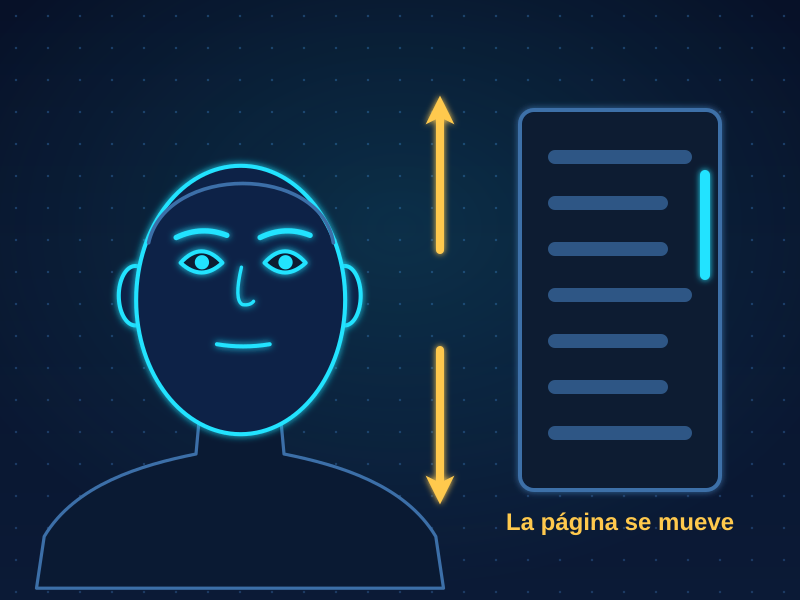
Desplazar: incline la cabeza y la página se mueve.
Con el puntero encima de las ventanas de Lycan Face Control no se hacen clics por accidente: los botones grandes se eligen quedándose quieto sobre ellos.
09
El teclado en pantalla
Se abre con el botón Teclado de la barra (o el cuidador con Ctrl+Alt+T). Tiene teclas grandes en español, con ñ y tildes. Para escribir una tecla, quédese quieto sobre ella (1 segundo de fábrica). De arriba hacia abajo tiene:
El mensajeLo que va escribiendo, en letra grande, con los botones Hablar, Repetir y Escribir.
Frases rápidasSí, No y cinco frases de uso diario, a un solo paso.
SugerenciasCinco palabras que completan lo que está escribiendo. Elegir una ahorra muchas letras.
Las letrasCuatro filas. Con la cabeza vienen en el orden del teclado normal (q w e r t y…); con el barrido, las más usadas primero.
«´» pone tilde a la vocal que siga (á, é, í, ó, ú). Dos veces seguidas pone diéresis (ü).
⇧ pone mayúscula a la siguiente letra, por ejemplo para escribir un nombre.
«123» muestra los números y signos (@, -, /, :, $, %…). «abc» vuelve a las letras.
Los botones del mensaje
Botón
Qué hace
Hablar
Dice el mensaje en voz alta. Después, la primera letra que escriba empieza un mensaje nuevo.
Repetir
Vuelve a decir lo último que se dijo.
Escribir
Envía el mensaje al programa que estaba usando (un chat, un correo, el Bloc de notas). Antes, elija con la cabeza dónde quiere escribir.
Copiar
Copia el mensaje para pegarlo en otro programa.
Borrar / Borrar palabra
Borra la última letra o la última palabra.
Deshacer
Recupera lo que se borró, o el mensaje anterior después de Hablar.
Limpiar
Borra todo el mensaje; antes pregunta «Sí, borrar» o «No borrar».
En Opciones ▸ Teclado y voz se elige si «Escribir» manda el mensaje completo (de fábrica) o cada letra al instante, el tamaño de las teclas, el tiempo para elegir una tecla y si una tecla se repite cuando el puntero se queda encima.
Sugerencias que aprendenLas sugerencias mejoran con las palabras que la persona usa. Esto se puede apagar o borrar; vea Privacidad.
10
Barrido: si la persona solo puede parpadear
Cuando mover la cabeza ya no es posible o cansa mucho, el teclado puede avanzar solo. Primero se iluminan las filas, una por una. Con un parpadeo largo se entra a la fila iluminada; luego se iluminan sus teclas y otro parpadeo largo elige la tecla. «↩ Volver» regresa a las filas.
El orden está pensado para comunicarse rápido: primero las frases rápidas (Sí, No, «¡Ayuda, llamen a alguien!»), luego las sugerencias, las letras y las acciones.
Se activa con el botón Barrido del teclado. En Opciones ▸ Teclado y voz se ajusta cuánto espera en cada fila o tecla (1,5 segundos de fábrica; más tiempo es más tranquilo).
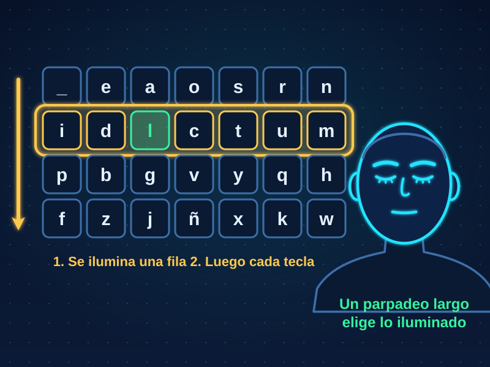
Una fila iluminada; un parpadeo largo elige.
«Solo comunicación»
Para quien solo puede parpadear, el cuidador pone Opciones ▸ Teclado y voz ▸ Solo comunicación en Sí. Entonces:
El teclado queda siempre abierto con barrido, y el puntero no se mueve.
Un parpadeo largo elige. Si la persona pausa, dos parpadeos largos seguidos quitan la pausa.
Los avisos («No veo su cara», la pausa) salen en una franja del propio teclado.
«Salir del barrido» y «Cerrar» no entran al barrido, para que la persona no quede sin forma de volver. El cuidador los tiene con el ratón.
Calibre el parpadeoHaga la calibración con el barrido o «Solo comunicación» ya encendidos: así se incluye el paso del parpadeo largo y queda ajustado a la persona.
11
Hablar con la voz del computador
El botón Hablar dice el mensaje en voz alta con una voz en español de Windows (por ejemplo «Sabina»). No necesita internet. Mientras habla, el mensaje se muestra en letra grande, para que también se pueda leer.
El volumen y la velocidad de la voz se ajustan en Opciones ▸ Teclado y voz.
De fábrica, al elegir una frase rápida también se dice en voz alta. Se apaga con «Decir las frases en voz alta».
Si el computador no tiene una voz en español, el programa avisa, usa la voz que haya (puede sonar en otro idioma) y muestra la frase en grande.
Si por algún motivo no se puede decir, aparece el aviso: «Muéstrele la pantalla a la persona».
Más vocesEn Windows, vaya a Configuración ▸ Hora e idioma ▸ Voz para agregar voces en español.
12
Frases rápidas
Frases listas para decir con un solo paso. Las de la primera categoría aparecen siempre en la fila rápida del teclado, junto a Sí y No:
¡Ayuda, llamen a alguien!
Tengo sed
Tengo dolor
Cambiarme de posición
Llamar a…
El botón Frases abre todas, por categorías: Básicas (Gracias, Por favor, No sé, Espere, estoy escribiendo…), Necesidades (Tengo hambre, Necesito ir al baño, Tengo frío, Acomódeme la cabeza, Necesito que me aspiren…), Dolor (dónde duele, si es fuerte o leve), Urgencia y Afecto (Te quiero, Estoy bien, Gracias por cuidarme…).
Frases urgentes«¡Ayuda, llamen a alguien!», «Me falta el aire» y «Llamen al médico» suenan con una alerta y a todo volumen, aunque «Decir las frases en voz alta» esté apagado.
Editar las frases (para el cuidador)
Abra Opciones ▸ Teclado y voz ▸ Editar las frases rápidas.
Agregue, cambie, borre u ordene frases y categorías (hasta 12 categorías y 40 frases en cada una). Marque Urgente las que deben sonar con alerta.
Escriba el nombre del cuidador en Opciones: «Llamar a…» dirá, por ejemplo, «Llamar a Marta».
Elija si las frases van en neutro, masculino o femenino («Estoy cansado» o «Estoy cansada»). Para una frase propia con las dos formas, escríbala así: {cansado|cansada}.
Si algo sale mal, «Volver a las de fábrica» recupera las frases originales.
13
Pausa y seguridad: nada queda presionado
Si la cámara deja de ver la cara, el puntero se queda quieto al instante y, en menos de medio segundo, el programa suelta cualquier botón que estuviera presionado (por ejemplo, a mitad de un arrastre).
A los 10 segundos sin ver la cara se pausa solo. Cuando la cara vuelve y se queda estable un segundo, sigue solo.
Si se pausa, se cierra el programa o algo falla, también suelta todo.
Si otra persona se pone frente a la cámara, suelta todo y espera. Si esa cara no se parece a la de la persona, se pausa y sigue cuando ella vuelve. Si es la misma persona (por ejemplo, la acomodaron más cerca), elija «Reanudar».
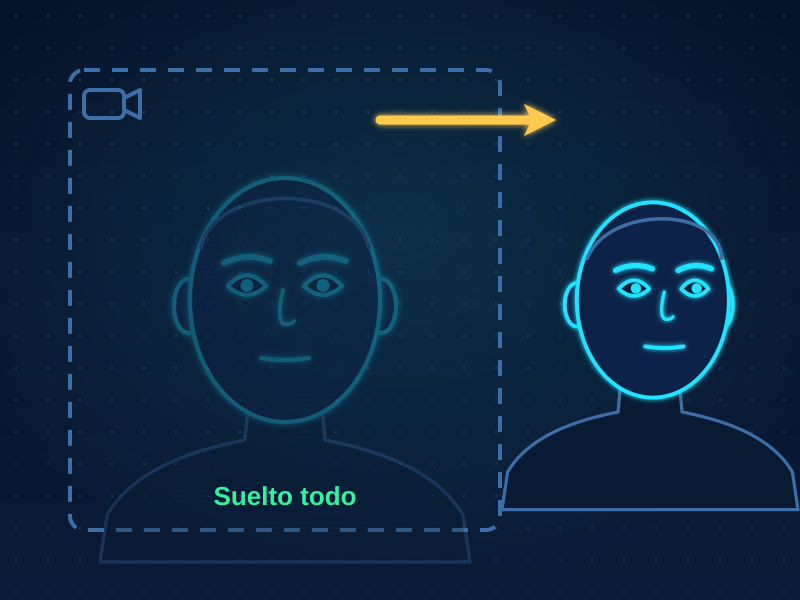
Si no ve la cara, suelta todo.
La pausa del cuidador
El cuidador puede pausar o reanudar en cualquier momento con Ctrl+Alt+Espacio o con el botón Pausar de la ventana. Cuando usted pausa así, abrir la boca no la quita: un bostezo, la comida o el aseo no reactivan el puntero. La quitan el botón «Reanudar» (con la cabeza) y el atajo.
Siempre se puede volverEl botón grande «Reanudar» existe siempre, y el atajo del cuidador también. El programa no deja guardar una configuración sin forma de reanudar.
Los programas abiertos «como administrador» no reciben clics ni texto de Lycan Face Control: Windows lo impide. El programa lo avisa.
14
Consejos para el cuidador
La postura
Cámara a la altura de los ojos, a 50 a 70 cm. Luz de frente. Si cambia la cama o la silla, recentre o calibre de nuevo.
El cansancio
Si la persona se cansa, suba la velocidad del puntero para mover menos el cuello, o use el barrido del teclado.
Movimientos involuntarios
Suba la suavidad (Opciones ▸ Puntero), y en Opciones ▸ Clic aumente «Cuánto se puede mover sin cancelar» y el tiempo quieto.
Sus frases
Ajuste las frases rápidas a la vida de la persona: nombres, rutinas, lo que pide a menudo.
Paciencia al empezar. Los primeros días cuestan. Empiece con ratos cortos y con el clic quedándose quieto, que es el más fácil.
La letra más grande: Opciones ▸ Comodidad ▸ Tamaño de la letra, y Alto contraste (negro y amarillo) si ve con dificultad.
La ventana pequeña: el botón Pequeña deja solo una tira con el estado y el botón Reanudar, para que no estorbe.
Abrir al encender: en Opciones ▸ Comodidad, para que el programa esté listo sin que nadie tenga que abrirlo.
Una franja de color arriba de la pantalla muestra el estado de un vistazo (activo, en pausa, sin cara). Se apaga en Opciones ▸ Comodidad.
Recordatorio de descanso: puede pedir que recuerde descansar el cuello cada cierto tiempo (viene apagado).
Si hace clics sin querer con la boca (al toser o reír), suba el tiempo de la boca en Opciones ▸ Gestos o apague ese gesto.
Un recordatorioDetrás de cada frase hay una persona que se toma su tiempo para decirla. Espere a que termine de escribir; la frase «Espere, estoy escribiendo» existe para eso.
15
Atajos de teclado (para el cuidador)
Funcionan aunque haya otro programa al frente. Se cambian en Opciones ▸ Atajos, y la Ayuda muestra siempre los que estén puestos.
Atajo
Qué hace
Ctrl+Alt+Espacio
Pausar o reanudar.
Ctrl+Alt+T
Abrir o cerrar el teclado.
Ctrl+Alt+C
Recentrar: tomar la posición actual como centro.
Ctrl+Alt+Inicio
Mostrar la ventana principal.
Ctrl+Alt+Fin
Cerrar el programa (antes suelta todo).
Teclado latinoamericanoAl guardar un atajo, el programa revisa que no escriba una letra, un símbolo o un acento en su teclado (por ejemplo, Ctrl+Alt+Q escribe «@»). Si lo hace, no lo acepta y le dice por qué. Estos atajos tampoco chocan con los de Lycan Mouse Control.
16
Las Opciones, pestaña por pestaña
Cada valor se cambia con botones grandes «−» y «+», para que la persona también pueda ajustarlos con la cabeza. Los cambios se prueban al instante; «Cancelar» los deshace y «Guardar» los deja. «Valores de fábrica» vuelve a lo original sin borrar la calibración ni los atajos.
Pestaña
Qué se ajusta
Puntero
Velocidad (1 a 10), suavidad y forma de mover: Directo, Almohadilla o Palanca.
Clic
Clic al quedarse quieto, el tiempo, cuánto se puede mover, la espera entre clics, el sonido, el tiempo para elegir un botón de la barra y si sigue en el modo elegido.
Gestos
Boca, cejas, sonrisa y ojos: encendido, sensibilidad, tiempo, qué hacen al hacerlos y al sostenerlos. Duración del parpadeo largo y si exige dos seguidos.
Teclado y voz
Orden de las letras, tiempo por tecla, barrido y su velocidad, cómo escribe en otros programas, tamaño de las teclas, volumen y velocidad de la voz, género de las frases, «Solo comunicación», aprender palabras, nombre del cuidador y editar las frases.
Comodidad
Tamaño de la letra, alto contraste, lugar y tamaño de la barra, franja de color, sonidos, recordatorio de descanso, mostrar el video de la cámara, abrir al encender el computador y cómo empezar al abrir.
Atajos
Los cinco atajos del cuidador.
Mientras las Opciones están abiertas, el programa suelta todo por seguridad.
17
Problemas frecuentes
Dice «No veo su cara»
Acerque a la persona a la cámara o mejore la luz de frente. Evite una ventana o una lámpara detrás. Revise que nada tape la cámara.
Dice «No encuentro la cámara» u «Otro programa está usando la cámara»
Cierre Zoom, Teams, Meet o la app Cámara: solo un programa puede usarla a la vez.
Si la cámara está conectada y sigue igual, en Configuración de Windows ▸ Privacidad y seguridad ▸ Cámara active «Permitir que las aplicaciones de escritorio accedan a la cámara».
El puntero tiembla
Suba la suavidad en Opciones ▸ Puntero y ponga más luz de frente.
El puntero no llega a los bordes de la pantalla
Repita la calibración (girando hasta donde sea cómodo) o suba la velocidad del puntero. Si la persona mueve poco el cuello, pruebe la forma Palanca.
Hace clics sin querer
Alargue el tiempo quieto para hacer clic en Opciones ▸ Clic, o apague el clic al quedarse quieto y use solo gestos.
Si tose o se ríe con la boca abierta y hace clic, suba el tiempo de la boca en Opciones ▸ Gestos o apague ese gesto.
No reconoce un gesto
Repita la calibración para que aprenda la cara en reposo. Luego suba la sensibilidad de ese gesto en Opciones ▸ Gestos y pruébelo con la barra en vivo. Si a la persona le cuesta un gesto, apáguelo y use otro, o el clic quedándose quieto.
El parpadeo largo no responde en el barrido
Cierre los ojos del todo y un poco más de tiempo, hasta que la barra se ponga verde. Con poca luz, sosténgalo un poco más. Repita la calibración con el barrido encendido o ajuste la duración del parpadeo largo en Opciones ▸ Gestos.
No escribe en un programa
Primero elija con la cabeza el programa donde quiere escribir y luego use «Escribir». Si aun así no escribe, ese programa puede estar abierto como administrador: Windows no lo permite. Use «Copiar» y pídale a alguien que lo pegue.
Se pausó solo
Pasa cuando no ve la cara durante 10 segundos, o cuando ve otra cara. Si la pausa fue automática, sigue solo cuando la persona vuelve. Si no, elija «Reanudar» con la cabeza o use Ctrl+Alt+Espacio.
No se oye la voz
Revise el volumen de Windows y el de la voz en Opciones ▸ Teclado y voz. Si no hay voces en español, agréguelas en Configuración ▸ Hora e idioma ▸ Voz.
Si algo falla, el programa lo anota en un registro de texto, sin imágenes y sin lo que la persona escribe: %APPDATA%\Lycan Face Control\registros.
18
Privacidad
La imagen de la cámara se procesa en el computador y nunca se guarda ni se envía. El programa no usa internet.
De fábrica ni siquiera se muestra el video: la ventana enseña una silueta de puntos de la cara. Se puede encender en Opciones ▸ Comodidad.
Lo que la persona escribe o dice no se anota en los registros.
Para mejorar las sugerencias, el programa guarda en este computador las palabras que la persona escribe, cuántas veces usó cada una y qué palabras van seguidas (por ejemplo «tengo sed»). No guarda el orden de lo escrito, pero quien abra la carpeta de datos podría adivinar partes por las palabras que van juntas. Se apaga con «Aprender mis palabras» y se borra con «Olvidar las palabras aprendidas» (en el editor de frases).
La configuración, las frases y las palabras viven en %APPDATA%\Lycan Face Control. Si un archivo se daña, el programa vuelve a los valores de fábrica y avisa.
19
Con honestidad: lo que no puede hacer
No sigue la mirada. Con una cámara web común no es preciso. Para quien no puede mover la cabeza está el barrido con parpadeo largo.
Si la persona pierde también el control de los párpados, este programa ya no le sirve: hacen falta sistemas especializados, como los seguidores de mirada con cámara infrarroja. Consulte con su equipo de salud.
Los programas abiertos como administrador no reciben clics ni texto.
Es una versión de prueba (1.0.0). Se probó con caras dibujadas por computador; la prueba con personas está en curso. Si algo no responde bien, la calibración y los ajustes de Opciones son la primera ayuda, y nos ayuda mucho que nos cuente.
¿Dudas, ideas o algo no funciona? Escriba a ingemaqsewing@gmail.com. Cada comentario ayuda a que el programa sirva a más personas.